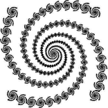

Purpose To experiment with finding rules for IFS which generate spiral fractals.
Materials An IFS program, directions sheet, fractal image sheet, a ruler, a protractor, a calculator.
Conclusion Finding correct rules for spiral fractals is not as easy as for relatives of the gasket. Even after finding an efficient decomposition into pieces, determining the r, s, theta, phi, e and f values for each piece requires measuring lengths and angles.